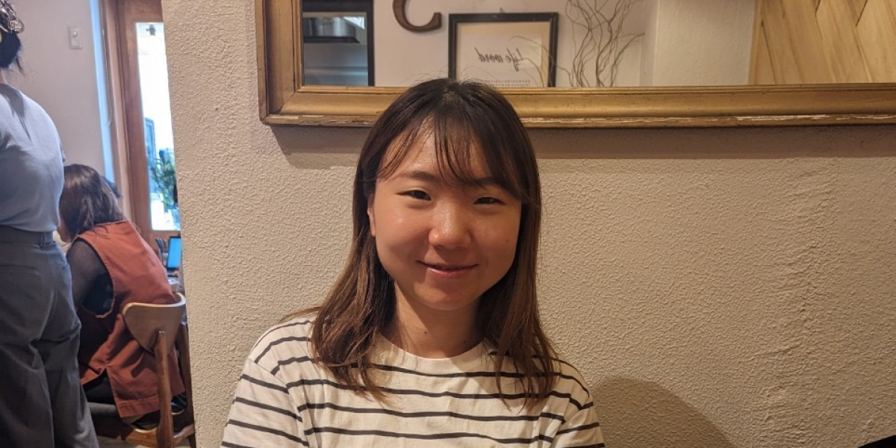

こんにちは、大久保 葵です。
これまで看護師として、患者さん一人ひとりの心身に寄り添い、最適なケアを通じて笑顔になっていただくことに大きなやりがいを感じて取り組んできました。
安定した専門職としての誇りを持ちつつも、心のどこかにあった「生涯をかけて、自分を突き動かすような創造的な挑戦がしたい」という想いから、もともと強い関心のあったデザインの世界へ進むことを決意しました。 もともとアートやデザインが好きだったことに加え、デザインによってユーザー体験の質やサービスの価値を最大化できるという可能性に強い魅力を感じ、現在はUI/UXデザイナーを目指しています。
医療現場で培ってきた、相手の本質的なニーズを汲み取り、言葉にできない潜在的な課題を徹底的に考え抜く力は、私のデザインプロセスの根底にある最大の強みです。
「ユーザーに考えさせない」
この言葉を軸に、誰もがストレスなく、心地よく使えるサービスの追求を目指しています。
日本はデザイン大国と言われますが、日常の中にはまだ見ぬ改善の種が至るところに潜んでいます。それらを丁寧に拾い上げ、アイデアが尽きるまで思考を重ねて形にする。
デザインという新たなアプローチで、より多くの人々へ確かな価値と喜びを届けていくことが、私の現在の目標です。